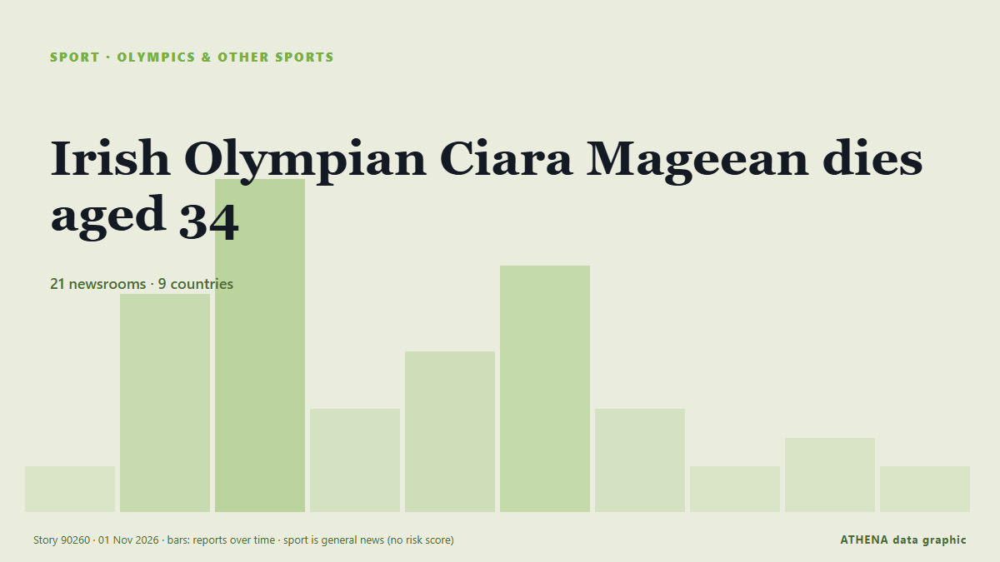

الرياضة
تُعرض العناوين بالإنجليزية كما نُشرت.

الألعاب الأولمبية ورياضات أخرىIrish Olympian Ciara Mageean dies aged 34
Ciara Mageean represented Ireland at the Rio 2016 Olympics and also at the Tokyo 2020 games in th... من Newstalk
| 19 أكتوبر | 4 |
|---|---|
| 20 أكتوبر | 0 |
| 21 أكتوبر | 9 |
| 22 أكتوبر | 12 |
| 23 أكتوبر | 16 |
| 24 أكتوبر | 9 |
| 25 أكتوبر | 32 |
| 26 أكتوبر | 45 |
| 27 أكتوبر | 64 |
| 28 أكتوبر | 60 |
| 29 أكتوبر | 72 |
| 30 أكتوبر | 101 |
| 31 أكتوبر | 58 |
| 1 نوفمبر | 30 |
Alcaraz beats De Minaur to win Vienna title
Carlos Alcaraz beat Alex de Minaur 6-1 6-4 to win the Vienna Open on Sunday, claiming his fourth title of the season and the 28th of his career, and extending his ATP 500 winning streak to 26 matches. من Cyprus Mail
Ukraine calls allowing return of Russian ice hockey teams to world championships ‘unacceptable’
Foreign minister says return of Russian teams while Ukraine war continues would give Moscow international legitimacy it seeks. من Anadolu Agency (English)
Barca hammer Alaves 6-1 to retain Liga top spot
Raphinha and Lamine Yamal struck twice each as Barcelona thrashed Alaves 6-1 on Saturday to reclaim their La Liga lead and get back on track after two damaging defeats. من Vanguard
Russia back in ice hockey world championships after sport court ruling
Court of Arbitration for Sport overturned IIHF decisions that excluded Russia from events in the 2026-27 season. من Al Jazeera English
Aston Villa vs Jamie Carragher - 'Unacceptable insults', legal action and an apology
Jamie Carragher has been pushing a narrative that Unai Emery should leave Aston Villa for Manchester United if given the chance, and from there, things have escalated. من Birmingham Mail
Senegal kicks off 2026 Youth Olympic Games
Senegal’s three-day general strike entered its second day on Thursday, with unions pressing the government to honour agreements on pay, pensions and working conditions amid a deepening economic… من RFI English
Pressure piles on Man United’s Carrick after 2-0 defeat at Chelsea
The travelling fans applauded Michael Carrick when he strode to the corner of the Shed End at Stamford Bridge to acknowledge them but Manchester United’s former stalwart midfielder and current… من Cyprus Mail
Harry Kane misses penalty in first match since Ballon d'Or triumph
Bayern Munich striker Harry Kane has beaten Barcelona youngster Lamine Yamal and Real Madrid forward Kylian Mbappé to emerge as the best player of the 2025-2026 season in Spanish newspaper Marca's… من Vanguard
Kenya: Ruto - Why Bayern V Ajax in Nairobi Is Perfect Tribute to Former PM Raila Odinga
[Capital FM] NAIROBI -- President William Ruto believes there could be no better way to honour former Prime Minister Raila Odinga than a blockbuster tie between Bayern Munich and Ajax at a stadium… من AllAfrica
Lawson disqualified from Mexico City GP qualifying, to start last
Stewards slapped both drivers with grid penalties after practice contact left debris scattered across the Mexico City track. من Stuff
09:56 Summer Youth Olympic Games flame lit in Senegal Sport
The country is hosting nearly 2,700 young competitors aged 14 to 17 from around the world. من Channels TV
14 players could miss Liverpool vs Arsenal after Andoni Iraola injury update
Liverpool have the chance to close the gap on Arsenal in the Premier League table when they meet at Anfield this afternoon. من Liverpool Echo
Ailing Kimi Antonelli Nears F1 Title in Mexico and Will Make History as Youngest Champion
The 20-year-old will become the sport’s youngest champion if he finishes ninth or higher next Sunday. من The Irish News (Belfast)
Norris fastest ahead of Antonelli in final Mexico practice
World champion Lando Norris, who won last year's race from pole position, topped the times ahead of his probable successor Kimi Antonelli by just 0.001 seconds in Saturday's final practice at the… من Tuoi Tre News
Kane misses penalty as Bayern draw 2-2 with Dortmund
Harry Kane missed a penalty for Bayern Munich and was punished by Fabio Silva’s late equaliser as Borussia Dortmund earned a 2-2 draw in Der Klassiker. من Sky Sports
In-form Fernandez sets up Tokyo final against Russia's Shnaider
The world number 23 from Canada defeated Uzbekistan's Kamilla Rakhimova 7-5, 6-3 to reach her second consecutive final. من Free Malaysia Today
De Minaur upsets Zverev, will face Alcaraz in Vienna final
Alex de Minaur held his nerve to overcome incoming men's No. من Free Malaysia Today
Zaman's century foils Sri Lanka as Pakistan win tri-series
LAHORE: Opener Fakhar Zaman returned to form with a brilliant century to help Pakistan beat Sri Lanka by three wickets in the tri-series final in Lahore on Saturday. من Business Recorder
Dakar 2026 Youth Olympics opens in historic first for Africa
A Namibian team of 12 athletes will represent the nation at the first ever Youth Olympic Games in Africa, which kick off in Dakar, Senegal, tomorrow. من The Namibian
Spain win inaugural FIFA U15 World Cup
Spain won the inaugural FIFA Under-15 World Cup and Festival after defeating the Czech Republic 3-0 in Friday’s final in Baku, Azerbaijan. من Trinidad Express
Hakimi bags hat-trick as PSG thrash Le Havre 5-1
Achraf Hakimi rose to the occasion scoring a glorious hat-trick on Friday as a heavily rotated Paris Saint-Germain thumped rock-bottom Le Havre 5-1 in Ligue 1. من Vanguard
Man City beaten by Brighton as Yasin Ayari makes amends for midweek penalty miss
Ayari missed a spot-kick in Wednesday’s shoot-out defeat in the Carabao Cup against City but scored the only goal of the game on Saturday. من The Irish News (Belfast)
Kamindu hits maiden ODI ton as Sri Lanka set Pakistan 326 in final
LAHORE: Kamindu Mendis hit a maiden ODI century and in-form Pavan Rathnayake scored 77 to guide Sri Lanka to 325-8 in the tri-series final against Pakistan in Lahore on Saturday. من Business Recorder
Arteta tells Dowman Premier League is 'not Disneyland' after ban upheld
LONDON: Arsenal manager Mikel Arteta said teenager Max Dowman must learn to cope with the demands of elite football after the winger’s red card in the League Cup defeat at fourth-tier Fleetwood Town… من New Straits Times
Medvedev into Vienna semis and books ATP Finals place
VIENNA: Daniil Medvedev will meet Carlos Alcaraz in the semi-finals of the Vienna ATP 500 tournament after beating Frenchman Adrian Mannarino on Friday, securing a place in the year-end ATP Finals in… من New Straits Times
Man United implode at Chelsea, and, make no mistake, they are in a Premier League relegation battle
Jack Fletcher was also spotted in training before the big Premier League fixture. من Evening Standard (London)
Michael Carrick confirms Bruno Fernandes will remain Manchester United captain
Manchester United captain Bruno Fernandes turned on head coach Michael Carrick after one of the club's most humiliating nights in European history. من MyJoyOnline
Djokovic faces ATP Finals battle after loss in Basel
Returning to Basel for the first time in 15 years, Novak Djokovic, lost 6-7(4), 7-5, 7-6(5) to German veteran Jan-Lennard Struff in Thursday’s second round, his first defeat in nine meetings. من Free Malaysia Today
Hyrox athlete Joanna Wietrzyk who soiled herself in race says backlash was ‘traumatic’ ahead of comeback
Dubai: HYROX world champion Joanna Wietrzyk will return to competition in Hamburg, Germany, on Friday, October 30, after a human-waste contamination incident during a race in Beijing sparked… من Gulf News
England heading out of the World Cup despite beating Papua New Guinea
The story of England’s World Cup exit - despite their win over Papua New Guinea. من Yorkshire Post
Azerbaijan to face Afghanistan in final match at FIFA U-15 World Cup in Baku
Azerbaijan will play its final match at the FIFA U-15 World Cup and Festival, being held in Baku, today. من AzerNews
Chase sparks Bangladesh collapse as West Indies on top in Mirpur Test
West Indies' Royston Chase forces collapse as Bangladesh slump to 79-6, a lead of 106 runs, on day three of first Test. من Al Jazeera English
Everton beat Newcastle to set up League Cup quarter-final with Fleetwood
Everton advanced to the League Cup quarter-finals with a 3-1 victory over Newcastle United on Thursday, setting up a clash against fourth-tier side Fleetwood Town. من Cyprus Mail
Boozer shines as Grizzlies top Blazers in battle of NBA unbeatens
LOS ANGELES: The Memphis Grizzlies, fueled by a triple-double from teenager Cameron Boozer, topped the Portland Trail Blazers 124-103 in a battle of NBA unbeatens on Thursday, Portland guard Ja… من New Straits Times